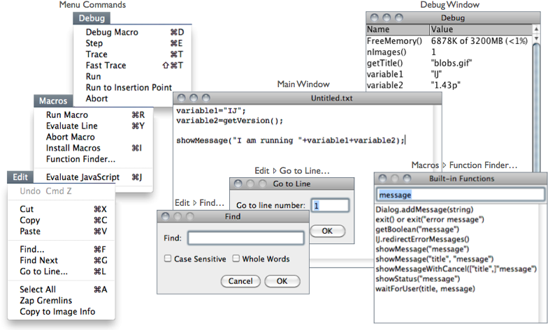

23 Editor
Macros↓, Scripts↑ and Plugins↑ can be opened and executed in the ImageJ editor. The editor commands are organized in five menus: File, Edit, Font, Macros and Debug.

Figure 16 The ImageJ editor (version 1.43n). The editor is a simple text editor featuring Function Finder… [F]↓, an essential tool when writing Macros↑. The Fiji Script Editor↑ is a more advanced editor featuring syntax highlight and support to all of Fiji↑’s scripting languages.
File Basic file operations (Open, Save, Print, etc.) are listed in this menu. The last saving directory is kept in IJ_prefs.txt, the IJ preferences file (see Settings and Preferences↑).
Edit Similarly to any other text editor this menu contains commands related to text handling as well as commands for locating text. Specially useful are:
-
Go to Line… [l] Ctrl L, This dialog box enables you to quickly go to a specified line of code.Zap Gremlins This command finds and deletes the extraneous non-visible, non-printing characters that sometimes appear when cutting and pasting from other sources, such as email messages that may contain extraneous control characters, or any non-ASCII characters.Copy to Image Info This command will copy the selected text (or the entire contents of the editor if no selection is present) to the image header, being available through the command. Note that the copied text will substitute any other information present in the file header and will only be available in images saved as TIFF (see 3: Image Types: Lossy Compression and Metadata↑).
Font This menu contains commands to adjust font size and type.
Macros This menu contains commands that allow you to run, install or evaluate macro code:
-
Run Macro [r] Ctrl R, Runs the macro or the selected line(s) of code.Evaluate Line [y] Ctrl Y, Runs the line of code that contains the insertion point.Abort Macro Exits the macroInstall Macros [i] Ctrl I, Adds the macro(s) contained in the editor to submenu ( command).Macro Functions… [M] Ctrl Shift M, Opens the Macro Functions reference page, the indispensable guide to the built-in functions that can be called from the ImageJ macro language (alias for ).Function Finder… [F] Ctrl Shift F, [3] Retrieves macro functions in the same way Find Commands… [l]↓ retrieves commands. Functions are read from the functions.html file stored in the macros folder (a local copy of http://imagej.nih.gov/ij/developer/macro/functions.html). This file is deleted by command every time ImageJ is updated to a release version (i.e., not a daily build, see Installing and Maintaining ImageJ↑), forcing Function Finder to download a fresh copy the next time it is launched.
Debug This menu contains seven commands related to the macro debugging. You can debug a macro using the commands in the Debug menu. You start a debugging session initiating . You can then single step through the macro code by repeatedly running .
-
Debug Macro [d] Ctrl D, Starts running the macro in debug mode and opens the ‘Debug’ window, which initially displays the memory usage, number of open images, and the active image’s title. The macro stops running at the first executable line of code, which is highlighted. Use one of the following commands to continue execution.Step [e] Ctrl E, Executes the highlighted statement and advances to the next. The variable names and values in the ‘Debug’ window are updated.Trace [t] Ctrl T, Runs the macro, displaying variable names and values in the ‘Debug’ window as they are encountered.Fast Trace [T] Ctrl Shift T, Same as above, but faster.Run Runs the macro to completion at normal speed (similarly to ).Run to Insertion Point Ctrl Shift E, Runs the macro to a statement that was previously defined by clicking the mouse on an executable line of code.Abort Exits debug mode.